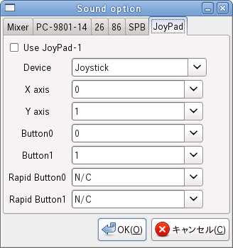

チェックするとジョイパッド 1 を使用します。
使用するジョイスティックデバイスを選択します。
Xnp2 は起動時にデバイスの一覧を取得するので起動後にデバイスを追加しても、Xnp2 は認識できません。そのデバイス使用する場合は Xnp2 を再起動してください。また、Xnp2 起動中にデバイスを抜く事はなるべくしないでください。
X 方向の入力に使用する軸の番号を指定します。通常は 0 番で問題無く使用できます。
Y 方向の入力に使用する軸の番号を指定します。通常は 1 番で問題無く使用できます。
ボタン 0 の入力に使用するボタン番号を指定します。
ボタン 1 の入力に使用するボタン番号を指定します。
ボタン 0 の連射入力に使用するボタン番号を指定します。
ボタン 1 の連射入力に使用するボタン番号を指定します。